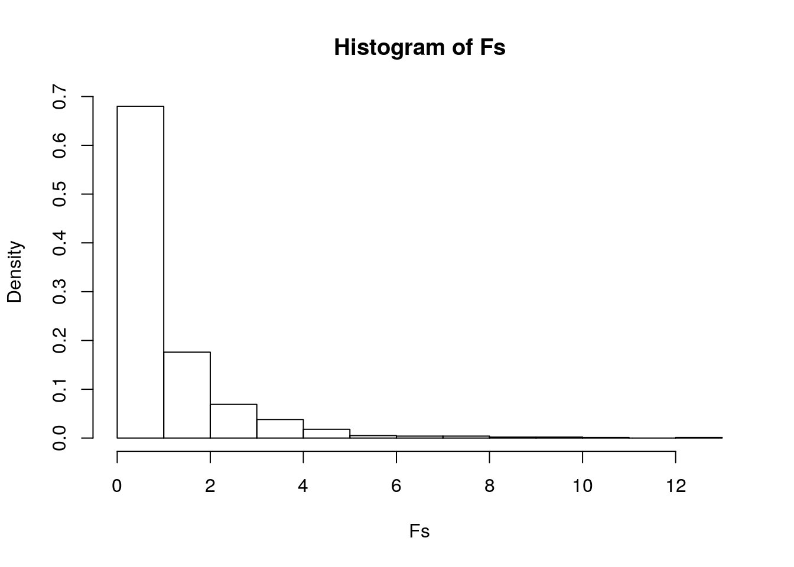

This is an R Markdown document. Markdown is a simple formatting syntax for authoring HTML, PDF, and MS Word documents. For more details on using R Markdown see http://rmarkdown.rstudio.com.
When you click the Knit button a document will be generated that includes both content as well as the output of any embedded R code chunks within the document. You can embed an R code chunk like this:
I chose the Affairs dataset. The main variables I will be looking at will be affairs, gender, age, and yearsmarried. Affairs refers to whether the married person had an affair or not, and yearsmarried is the amount of years the person has been married. There are 601 individual observations in this dataset before any data prep.
# import libraries
library(tidyverse)
library(ggplot2)
library(dplyr)
# install.packages('gridExtra')
library(gridExtra)## [1] 601# checking MANOVA assumptions
# install.packages('rstatix')
library(rstatix)
group <- affairs$gender
DVs <- affairs %>% select(yearsmarried, age, affairs)
# Test multivariate normality for each group (null:
# assumption met)
sapply(split(DVs, group), mshapiro_test)## female male
## statistic 0.8581947 0.9402423
## p.value 2.31467e-16 2.329572e-09# If any p<.05, stop (assumption violated). If not,
# test homogeneity of covariance matrices
# Box's M test (null: homogeneity of vcov mats
# assumption met) box_m(DVs, group)
# Optionally View covariance matrices for each
# group lapply(split(DVs,group), cov)# running MANOVA test
man1 <- manova(cbind(yearsmarried, age, affairs) ~
gender, data = affairs)
summary(man1)## Df Pillai approx F num Df den Df Pr(>F)
## gender 1 0.0723 15.509 3 597 1.001e-09 ***
## Residuals 599
## ---
## Signif. codes: 0 '***' 0.001 '**' 0.01 '*' 0.05 '.' 0.1 ' ' 1# running ANOVA to find response variable
summary.aov(man1)## Response yearsmarried :
## Df Sum Sq Mean Sq F value Pr(>F)
## gender 1 17.1 17.078 0.5498 0.4587
## Residuals 599 18606.6 31.063
##
## Response age :
## Df Sum Sq Mean Sq F value Pr(>F)
## gender 1 1881 1881.48 22.591 2.512e-06 ***
## Residuals 599 49887 83.28
## ---
## Signif. codes: 0 '***' 0.001 '**' 0.01 '*' 0.05 '.' 0.1 ' ' 1
##
## Response affairs :
## Df Sum Sq Mean Sq F value Pr(>F)
## gender 1 0.9 0.8993 0.0825 0.774
## Residuals 599 6528.2 10.8985# Look at mean differences
affairs %>% group_by(gender) %>% summarize(mean(yearsmarried),
mean(age), mean(affairs))## # A tibble: 2 x 4
## gender `mean(yearsmarried)` `mean(age)` `mean(affairs)`
## <fct> <dbl> <dbl> <dbl>
## 1 female 8.02 30.8 1.42
## 2 male 8.35 34.3 1.50# run all t test to find which groups differ for
# each response variable
pairwise.t.test(affairs$yearsmarried, affairs$gender,
p.adj = "none")##
## Pairwise comparisons using t tests with pooled SD
##
## data: affairs$yearsmarried and affairs$gender
##
## female
## male 0.46
##
## P value adjustment method: nonepairwise.t.test(affairs$age, affairs$gender, p.adj = "none")##
## Pairwise comparisons using t tests with pooled SD
##
## data: affairs$age and affairs$gender
##
## female
## male 2.5e-06
##
## P value adjustment method: nonepairwise.t.test(affairs$affairs, affairs$gender, p.adj = "none")##
## Pairwise comparisons using t tests with pooled SD
##
## data: affairs$affairs and affairs$gender
##
## female
## male 0.77
##
## P value adjustment method: noneAt least one species differs for the response variable. Only age shows group differences.1 MANOVA, 3 ANOVAS, 6 t-tests (10 tests) were performed. The probability of at least one type I error is: 1-0.95^10 = 0.401. With the Bonferroni correction, the Type 1 error rate is: α = 0.05/10 = 0.005. Everything is still significant even using the conservative α. MANOVA assumptions were not met.
# install.packages('vegan')
library(vegan)
dists <- affairs %>% select(yearsmarried, age, affairs) %>%
dist
adonis(dists ~ gender, data = affairs)##
## Call:
## adonis(formula = dists ~ gender, data = affairs)
##
## Permutation: free
## Number of permutations: 999
##
## Terms added sequentially (first to last)
##
## Df SumsOfSqs MeanSqs F.Model R2 Pr(>F)
## gender 1 1899 1899.46 15.166 0.02469 0.001 ***
## Residuals 599 75022 125.25 0.97531
## Total 600 76921 1.00000
## ---
## Signif. codes: 0 '***' 0.001 '**' 0.01 '*' 0.05 '.' 0.1 ' ' 1table(affairs$gender)##
## female male
## 315 286# compute observed F
SST <- sum(dists^2)/601
SSW <- affairs %>% group_by(gender) %>% select(gender,
yearsmarried, age, affairs) %>% do(d = dist(.[-1],
"euclidean")) %>% ungroup() %>% summarize(sum(d[[1]]^2)/315 +
sum(d[[2]]^2)/286) %>% pull
F_obs <- ((SST - SSW)/1)/(SSW/599) #observed F statistic
Fs <- replicate(1000, {
new <- affairs %>% mutate(gender = sample(gender)) #permute the species vector
SSW <- new %>% group_by(gender) %>% select(gender,
yearsmarried, age, affairs) %>% do(d = dist(.[-1],
"euclidean")) %>% ungroup() %>% summarize(sum(d[[1]]^2)/315 +
sum(d[[2]]^2)/286) %>% pull
((SST - SSW)/1)/(SSW/599) #calculate new F on randomized data
})
{
hist(Fs, prob = T)
abline(v = F_obs, col = "red", add = T)
}
mean(Fs > F_obs)## [1] 0H0 : For each response variable, the means of all groups are equal. HA : For at least 1 response variable, at least 1 group mean differs. The results from the randomized test were significant, indicating that the null hypothesis can be rejected, and that at least 1 group mean differs for at least 1 response variable. In 1000 replications, there was never a value as big as \(F_{obs}\). Thus, the empirical p-value is 0 (definitely reject the null hypothesis). The p-value from running adonis was also significant, indicating again that the null hypothesis should be rejected.
affairs$yearsmarried_c <- affairs$yearsmarried - mean(affairs$yearsmarried)
fit <- lm(age ~ gender * yearsmarried_c, data = affairs)
summary(fit)##
## Call:
## lm(formula = age ~ gender * yearsmarried_c, data = affairs)
##
## Residuals:
## Min 1Q Median 3Q Max
## -15.8015 -3.3022 -0.5854 2.3949 19.4425
##
## Coefficients:
## Estimate Std. Error t value Pr(>|t|)
## (Intercept) 31.00409 0.31806 97.480 < 2e-16 ***
## gendermale 3.10694 0.46109 6.738 3.78e-11 ***
## yearsmarried_c 1.26072 0.05659 22.279 < 2e-16 ***
## gendermale:yearsmarried_c 0.05842 0.08293 0.704 0.481
## ---
## Signif. codes: 0 '***' 0.001 '**' 0.01 '*' 0.05 '.' 0.1 ' ' 1
##
## Residual standard error: 5.643 on 597 degrees of freedom
## Multiple R-squared: 0.6328, Adjusted R-squared: 0.631
## F-statistic: 343 on 3 and 597 DF, p-value: < 2.2e-16affairs %>% ggplot(aes(yearsmarried, age, color = gender)) +
geom_point() + geom_smooth(method = "lm", se = F)# checking assumptions of regression
resids <- fit$residuals
fitvals <- fit$fitted.values
# linearity
data.frame(resids, fitvals) %>% ggplot(aes(fitvals,
resids)) + geom_point() + geom_hline(yintercept = 0)# normality
par(mfrow = c(1, 2))
hist(resids)
qqnorm(resids)
qqline(resids, col = "red")# homoskedasticity
ggplot(affairs, aes(yearsmarried, age, color = gender)) +
geom_point()# install.packages('sandwich');install.packages('lmtest')
library(sandwich)
library(lmtest)
summary(fit)$coef[, 1:2]## Estimate Std. Error
## (Intercept) 31.00409144 0.31805524
## gendermale 3.10694193 0.46108535
## yearsmarried_c 1.26072091 0.05658748
## gendermale:yearsmarried_c 0.05841551 0.08292903coeftest(fit, vcov = vcovHC(fit))##
## t test of coefficients:
##
## Estimate Std. Error t value Pr(>|t|)
## (Intercept) 31.004091 0.286019 108.3987 < 2.2e-16 ***
## gendermale 3.106942 0.468310 6.6344 7.316e-11 ***
## yearsmarried_c 1.260721 0.055359 22.7736 < 2.2e-16 ***
## gendermale:yearsmarried_c 0.058416 0.091326 0.6396 0.5227
## ---
## Signif. codes: 0 '***' 0.001 '**' 0.01 '*' 0.05 '.' 0.1 ' ' 1The intercept of 31.00409 is the predicted Age for Females whose yearsmarried is average. For every one unit increase in yearsmarried, there is a 1.26072 unit increase in Age, on average. For people with average number of yearsmarred, Males have average/predicted Age that is 3.10694 greater than Females. Slope of yearsmarried on Age for Males is 0.05842 greater than for Females. All assumptions were met. After recomputing with robust SEs, the SE increased for the gendermale and gendermale:yearsmarried_c, but decreased (by a little) for yearsmarried_c. R-squared says 63.3% of variability in Age is explained.
# here's a way to sample people/rows from your
# dataset with replacement
boot_dat <- sample_frac(affairs, replace = T)
# repeat 5000 times
samp_distn <- replicate(5000, {
boot_dat <- sample_frac(affairs, replace = T) #take bootstrap sample of rows
fit_new <- lm(age ~ yearsmarried * gender, data = boot_dat) #fit model on bootstrap sample
coef(fit_new) #save coefs
})
## Estimated/boostrap SEs
samp_distn %>% t %>% as.data.frame %>% summarize_all(sd)## (Intercept) yearsmarried gendermale yearsmarried:gendermale
## 1 0.335787 0.05563508 0.6733266 0.0913851## Empirical 95% CI
samp_distn %>% t %>% as.data.frame %>% pivot_longer(1:3) %>%
group_by(name) %>% summarize(lower = quantile(value,
0.025), upper = quantile(value, 0.975))## # A tibble: 3 x 3
## name lower upper
## <chr> <dbl> <dbl>
## 1 (Intercept) 20.0 21.3
## 2 gendermale 1.31 3.92
## 3 yearsmarried 1.15 1.37# comparison of SEs Normal-theory SEs
coeftest(fit)##
## t test of coefficients:
##
## Estimate Std. Error t value Pr(>|t|)
## (Intercept) 31.004091 0.318055 97.4802 < 2.2e-16 ***
## gendermale 3.106942 0.461085 6.7383 3.78e-11 ***
## yearsmarried_c 1.260721 0.056587 22.2791 < 2.2e-16 ***
## gendermale:yearsmarried_c 0.058416 0.082929 0.7044 0.4815
## ---
## Signif. codes: 0 '***' 0.001 '**' 0.01 '*' 0.05 '.' 0.1 ' ' 1## Heteroskedasticity Robust SEs
coeftest(fit, vcov = vcovHC(fit))##
## t test of coefficients:
##
## Estimate Std. Error t value Pr(>|t|)
## (Intercept) 31.004091 0.286019 108.3987 < 2.2e-16 ***
## gendermale 3.106942 0.468310 6.6344 7.316e-11 ***
## yearsmarried_c 1.260721 0.055359 22.7736 < 2.2e-16 ***
## gendermale:yearsmarried_c 0.058416 0.091326 0.6396 0.5227
## ---
## Signif. codes: 0 '***' 0.001 '**' 0.01 '*' 0.05 '.' 0.1 ' ' 1## Bootstrapped SEs (resampling rows)
samp_distn %>% t %>% as.data.frame %>% summarize_all(sd)## (Intercept) yearsmarried gendermale yearsmarried:gendermale
## 1 0.335787 0.05563508 0.6733266 0.0913851The SEs between all the tests were similar, with Heteroskedasticity SEs begin in the middle and Bootstrapped SEs being the largest. While the p-values changed between the Normal-theory SEs and Heteroskedasticity SEs, they values were still significant.
affairs_data <- affairs %>% mutate(y = ifelse(children ==
"yes", 1, 0))
fit_log <- glm(y ~ yearsmarried + affairs, data = affairs_data,
family = binomial(link = "logit"))
coeftest(fit_log)##
## z test of coefficients:
##
## Estimate Std. Error z value Pr(>|z|)
## (Intercept) -1.202593 0.181016 -6.6436 3.062e-11 ***
## yearsmarried 0.357374 0.033135 10.7854 < 2.2e-16 ***
## affairs -0.018475 0.041199 -0.4484 0.6538
## ---
## Signif. codes: 0 '***' 0.001 '**' 0.01 '*' 0.05 '.' 0.1 ' ' 1exp(coef(fit_log))## (Intercept) yearsmarried affairs
## 0.3004143 1.4295709 0.9816949# confusion matrix get predicted probabilities
# install.packages(plotROC)
library(plotROC)
affairs_data$prob <- predict(fit_log, type = "response")
# predicted outcomes (if prob>.5, predict
# malignant, otherwise predict benign)
# affairs_data$predicted <-
# ifelse(affairs_data$prob>.5,'Children','No
# Children')
affairs_data <- affairs_data %>% mutate(prob = predict(fit_log,
type = "response"), prediction = ifelse(prob >
0.5, 1, 0))
table(predict = as.numeric(affairs_data$prob > 0.5),
truth = affairs_data$y) %>% addmargins## truth
## predict 0 1 Sum
## 0 109 31 140
## 1 62 399 461
## Sum 171 430 601# table(truth=affairs_data$children,
# prediction=affairs$predicted)%>%addmargins
# accuracy
(109 + 399)/601## [1] 0.8452579# tpr
399/430## [1] 0.927907# tnr
109/171## [1] 0.6374269# ppv
399/461## [1] 0.8655098classify <- affairs_data %>% transmute(prob, prediction,
truth = y)
ROCplot <- ggplot(classify) + geom_roc(aes(d = truth,
m = prob), n.cuts = 0)
ROCplotcalc_auc(ROCplot)## PANEL group AUC
## 1 1 -1 0.8725554# density plot
affairs_data$logit <- predict(fit_log, type = "link") #get predicted logit/log-odds for everyone
## Density plot of log-odds for each outcome:
affairs_data %>% ggplot() + geom_density(aes(logit,
color = children, fill = children), alpha = 0.4) +
theme(legend.position = c(0.85, 0.85)) + geom_vline(xintercept = 0) +
xlab("logit (log-odds)") + geom_rug(aes(logit,
color = children))Every one-unit increase in yearsmarried multiplies odds by 1.43. Every one-unit increase in affairs multiplies odds by 0.982. The Accuracy = 0.845, TPR = 0.928, TNR = 0.637, PPV = 0.866, and AUC = 0.873. Our AUC isn't the best, but it is still a good value.
affairs_new <- affairs %>% mutate(y = ifelse(children ==
"yes", 1, 0))
affairs_new$children <- NULL
fit4 <- glm(y ~ ., data = affairs_new, family = "binomial")
prob2 <- predict(fit4)
class_diag <- function(probs, truth) {
# CONFUSION MATRIX: CALCULATE ACCURACY, TPR, TNR,
# PPV
tab <- table(factor(probs > 0.5, levels = c("FALSE",
"TRUE")), truth)
acc = sum(diag(tab))/sum(tab)
sens = tab[2, 2]/colSums(tab)[2]
spec = tab[1, 1]/colSums(tab)[1]
ppv = tab[2, 2]/rowSums(tab)[2]
f1 = 2 * (sens * ppv)/(sens + ppv)
if (is.numeric(truth) == FALSE & is.logical(truth) ==
FALSE)
truth <- as.numeric(truth) - 1
# CALCULATE EXACT AUC
ord <- order(probs, decreasing = TRUE)
probs <- probs[ord]
truth <- truth[ord]
TPR = cumsum(truth)/max(1, sum(truth))
FPR = cumsum(!truth)/max(1, sum(!truth))
dup <- c(probs[-1] >= probs[-length(probs)], FALSE)
TPR <- c(0, TPR[!dup], 1)
FPR <- c(0, FPR[!dup], 1)
n <- length(TPR)
auc <- sum(((TPR[-1] + TPR[-n])/2) * (FPR[-1] -
FPR[-n]))
data.frame(acc, sens, spec, ppv, f1, auc)
}
truth = affairs_new$y
class_diag(prob2, truth)## acc sens spec ppv f1 auc
## 1 0.8053245 0.8093023 0.7953216 0.9086162 0.8560886 0.8878417table(prediction = as.numeric(prob2 > 0.5), truth) %>%
addmargins()## truth
## prediction 0 1 Sum
## 0 136 82 218
## 1 35 348 383
## Sum 171 430 601set.seed(1234)
k = 10
# your code here k-fold CV
data_CV <- affairs_new[sample(nrow(affairs_new)), ] #randomly order rows
folds <- cut(seq(1:nrow(affairs_new)), breaks = k,
labels = F) #create folds
diags <- NULL
for (i in 1:k) {
## Create training and test sets
train <- data_CV[folds != i, ]
test <- data_CV[folds == i, ]
truth1 <- test$y ## Truth labels for fold i
## Train model on training set (all but fold i)
fitCV1 <- glm(y ~ ., data = train, family = "binomial")
## Test model on test set (fold i)
probs_CV <- predict(fitCV1, newdata = test, type = "response")
## Get diagnostics for fold i
diags <- rbind(diags, class_diag(probs_CV, truth1))
}
summarize_all(diags, mean) #average diagnostics across all k folds## acc sens spec ppv f1 auc
## 1 0.8304098 0.8975902 0.6620309 0.8706699 0.8830608 0.875851library(glmnet)
set.seed(1234)
# your code here
y <- as.matrix(affairs$children) #grab response
x <- model.matrix(children ~ ., data = affairs)[, -1] #predictors (drop intercept)
head(x)## X affairs gendermale age yearsmarried religiousness education occupation
## 1 4 0 1 37 10.00 3 18 7
## 2 5 0 0 27 4.00 4 14 6
## 3 11 0 0 32 15.00 1 12 1
## 4 16 0 1 57 15.00 5 18 6
## 5 23 0 1 22 0.75 2 17 6
## 6 29 0 0 32 1.50 2 17 5
## rating yearsmarried_c
## 1 4 1.822304
## 2 4 -4.177696
## 3 4 6.822304
## 4 5 6.822304
## 5 3 -7.427696
## 6 5 -6.677696x <- scale(x)
cv <- cv.glmnet(x, y, family = "binomial")
lasso <- glmnet(x, y, family = "binomial", lambda = cv$lambda.1se)
coef(lasso)## 11 x 1 sparse Matrix of class "dgCMatrix"
## s0
## (Intercept) 1.3034873154
## X .
## affairs .
## gendermale .
## age .
## yearsmarried 1.3520011551
## religiousness .
## education .
## occupation -0.0349329259
## rating .
## yearsmarried_c 0.0008789886# prob_lasso <- predict(lasso_fit, poke_preds,
# type='response') class_diag(prob_lasso, truth)
# table(prediction=as.numeric(prob_lasso>.5),
# truth)# Lasso CV
set.seed(1234)
k = 10 #choose number of folds
data1 <- affairs %>% sample_frac
folds <- ntile(1:nrow(data1), n = 10)
diags <- NULL
for (i in 1:k) {
train <- data1[folds != i, ]
test <- data1[folds == i, ]
truth <- test$children
fit5 <- glm(children ~ yearsmarried + yearsmarried_c,
data = train, family = "binomial")
probs5 <- predict(fit5, newdata = test, type = "response")
yhat <- predict(fit5, newdata = test)
diags <- rbind(diags, class_diag(probs5, truth))
}
diags %>% summarize_all(mean)## acc sens spec ppv f1 auc
## 1 0.8453825 0.9275295 0.6396313 0.8667052 0.8949998 0.8731716In-sample classification diagnostics: ACC = 0.805, TPR = 0.809, TNR = 0.795, PPV = 0.909, AUC = 0.888. Out-of-sample classification diagnostics: ACC = 0.830, TPR = 0.898, TNR = 0.662, PPV = 0.871, AUC = 0.876. The in-sample diagnostic had a slightly better AUC value than the out-of-sample diagnostic. Yearsmarried and yearsmarried_c are the only variables which are the most predictive of children. CV on Lasso: ACC = 0.845, TPR = 0.928, TNR = 0.640, PPV = 0.867, AUC = 0.873. Our AUC value for the Lasso model was the lowest value out of all the classification diagnostics.
Note that the echo = FALSE parameter was added to the code chunk to prevent printing of the R code that generated the plot.
## R version 3.6.1 (2019-07-05)
## Platform: x86_64-pc-linux-gnu (64-bit)
## Running under: Ubuntu 18.04.5 LTS
##
## Matrix products: default
## BLAS: /stor/system/opt/R/R-3.6.1/lib/R/lib/libRblas.so
## LAPACK: /stor/system/opt/R/R-3.6.1/lib/R/lib/libRlapack.so
##
## locale:
## [1] LC_CTYPE=en_US.UTF-8 LC_NUMERIC=C
## [3] LC_TIME=en_US.UTF-8 LC_COLLATE=en_US.UTF-8
## [5] LC_MONETARY=en_US.UTF-8 LC_MESSAGES=en_US.UTF-8
## [7] LC_PAPER=en_US.UTF-8 LC_NAME=C
## [9] LC_ADDRESS=C LC_TELEPHONE=C
## [11] LC_MEASUREMENT=en_US.UTF-8 LC_IDENTIFICATION=C
##
## attached base packages:
## [1] stats graphics grDevices utils datasets methods base
##
## other attached packages:
## [1] glmnet_4.0-2 Matrix_1.2-17 plotROC_2.2.1 lmtest_0.9-37
## [5] zoo_1.8-8 sandwich_2.5-1 vegan_2.5-6 lattice_0.20-41
## [9] permute_0.9-5 rstatix_0.6.0 gridExtra_2.3 forcats_0.5.0
## [13] stringr_1.4.0 dplyr_1.0.1 purrr_0.3.4 readr_1.3.1
## [17] tidyr_1.1.1 tibble_3.0.3 ggplot2_3.3.2 tidyverse_1.3.0
##
## loaded via a namespace (and not attached):
## [1] nlme_3.1-148 fs_1.5.0 lubridate_1.7.9 httr_1.4.2
## [5] tools_3.6.1 backports_1.1.8 utf8_1.1.4 R6_2.4.1
## [9] DBI_1.1.0 mgcv_1.8-31 colorspace_1.4-1 withr_2.2.0
## [13] tidyselect_1.1.0 curl_4.3 compiler_3.6.1 cli_2.0.2
## [17] rvest_0.3.6 formatR_1.7 xml2_1.3.2 labeling_0.3
## [21] bookdown_0.20 scales_1.1.1 digest_0.6.25 foreign_0.8-71
## [25] rmarkdown_2.5 rio_0.5.16 pkgconfig_2.0.3 htmltools_0.5.0
## [29] dbplyr_1.4.4 rlang_0.4.7 readxl_1.3.1 rstudioapi_0.11
## [33] shape_1.4.5 generics_0.0.2 farver_2.0.3 jsonlite_1.7.0
## [37] zip_2.1.0 car_3.0-8 magrittr_1.5 Rcpp_1.0.5
## [41] munsell_0.5.0 fansi_0.4.1 abind_1.4-5 lifecycle_0.2.0
## [45] stringi_1.5.3 yaml_2.2.1 carData_3.0-4 MASS_7.3-51.6
## [49] plyr_1.8.6 grid_3.6.1 blob_1.2.1 parallel_3.6.1
## [53] crayon_1.3.4 haven_2.3.1 splines_3.6.1 hms_0.5.3
## [57] knitr_1.29 pillar_1.4.6 codetools_0.2-16 reprex_0.3.0
## [61] glue_1.4.2 evaluate_0.14 blogdown_0.20 data.table_1.13.0
## [65] modelr_0.1.8 foreach_1.5.0 vctrs_0.3.2 cellranger_1.1.0
## [69] gtable_0.3.0 assertthat_0.2.1 xfun_0.19 openxlsx_4.1.5
## [73] broom_0.7.0 survival_3.2-3 iterators_1.0.12 cluster_2.1.0
## [77] ellipsis_0.3.1## [1] "2020-12-11 21:26:03 CST"## sysname
## "Linux"
## release
## "4.15.0-117-generic"
## version
## "#118-Ubuntu SMP Fri Sep 4 20:02:41 UTC 2020"
## nodename
## "educcomp02.ccbb.utexas.edu"
## machine
## "x86_64"
## login
## "unknown"
## user
## "pmc977"
## effective_user
## "pmc977"